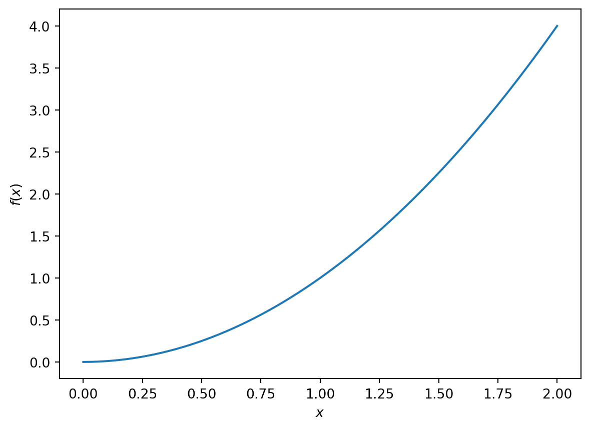

Code
x=1
y=2
z=x+y
print(z)3It is strongly encouraged that you make use of opportunities to use and develop computer programs over the course of your project. You should discuss programming with your project supervisor.
In this section we will develop some Python codes. Python has been chosen because it:
It is, of course, fine if you wish to use other programming languages in your project.
On the Uni machines Quarto has been set up so that it interfaces to an installation of Python with some preinstalled libraries. To set up on your own machine you will need to install Python, create a Python environment and interface with Quarto (Show and Run Commands -> Select Python Interpreter).
To run Python within Quarto, create a python environment as follows:
```{python}
# Insert Python code here.
```Note that a simialr syntax is used to embed codes in other open source languages (R and Julia).
We can use Python as a simple calculator.
x=1
y=2
z=x+y
print(z)3Use Python to compute the product of 157 and 213.
It is worth having a concept of different `datatypes’ before you start progamming. In Python, some of the key datatypes are:
In Python, we not explicitly declare a datatype (the interpreter figures this out based upon the variable that has been defined). See code below for an example.
# Define an integer
a=8
# Define a floating point number
b=16.25
# Define a string
s='Arsenal FC'
# print out the datatype
print(type(a))
print(type(b))
print(type(s))
# Define some bollean variables
boolean_variable_1=True
boolean_variable_2=False
boolean_variable_and=boolean_variable_1*boolean_variable_2
assert(boolean_variable_and==False)<class 'int'>
<class 'float'>
<class 'str'>Define a float and integer (e.g. \(x=2.0\) and \(y=7\)).
What datatype is the product?
Python comes with some default containers:
These have different uses.
Lists are mutable, i.e. they can be modified within the code.
# Define a list
mylist=[1,2,3]
# Print to screen
print(mylist)
# Look at the 0th entry
print(mylist[0])
# Define a new list
mylist2=['a','b','c']
# Print to screen
print(mylist2)
# Print the 0th entry to screen
print(mylist2[0])
# Change one of the elements ... it is mutable
mylist2[1]='d'
#Print to screen
print(mylist2)[1, 2, 3]
1
['a', 'b', 'c']
a
['a', 'd', 'c']Create a list of five integers.
Sort the list in order of increasing size.
What happens if you try to access the `6th’ entry in the list?
Append another entry to the list.
Tuples are immutable container types, i.e.
mytuple=(1,2,3)
print(mytuple)
print(mytuple[0])
mytuple2=('a','b','c')
print(mytuple2)
print(mytuple2[0])(1, 2, 3)
1
('a', 'b', 'c')
aSets are denoted with curly brackets and behave like mathematical sets.
They are not indexed and there are no repeated entries.
myset={1,2,3}
print(myset)
myset2={'a','b','c','a'}
print(myset2){1, 2, 3}
{'a', 'b', 'c'}Dictionaries are used to interface datatypes that are connected. The first entry is known as the key.
Suppose John, Helen and Carol have been assigned projects 1,2 and 3, respectively. I could use a dictionary to connect these pieces of data as follows:
mydictionary={'John':1, 'Helen':2,'Carol':3}
print(mydictionary)
print('Helen\'s project is')
print(mydictionary['Helen']){'John': 1, 'Helen': 2, 'Carol': 3}
Helen's project is
2It is essential to be competent using logical statments statements in any programming language. Here we will consider for loops and if statements.
Note the positioning of the colon and the indentation in the code example below:
for i in range(5):
print(i)0
1
2
3
4Write a for loop that loops over one of the lists that you defined above and prints each item to screen.
Suppose we only wish to print out \(i\) when it is greater than three in the above code. We could introduce an if statement as follows (note colon and indentation again):
for i in range(5):
if (i>3):
print(i)4Modify your above for loop as follows. Write an if statement within the for loop so that only certain entries in the list get printed out.
Python has nicer ways to loop over containers (lists, arrays etc.) but this is enough for now.
A good rule of thumb is that if you find yourself using the same piece of code three or more times, you should write a function (module). This avoids duplication of code.
Suppose we find ourselves manually computing the sum of positive integers many times, i.e. \[ s_2=0+1+2=3 \] and \[ s_3=0+1+2+3=6. \]
It makes sense to write a function that computes the sum for arbitrary \(n\). Then we call that function when needed. This way the logic of the function is only written out in one place.
# Define a function
def sum_integers(n):
sum_int=0
for i in range(n):
sum_int=sum_int+i
return sum_int
# The old way might eb to manually write out the sum
s_1=0+1
s_2=0+1+2
s_3=0+1+2+3
# instead we call a function
s_function_3=sum_integers(3)
print(s_function_3)
s_function_120=sum_integers(120)
print(s_function_120)3
7140Write a function that takes a list as an agrument and prints out the entries using a for loop.
You will have bugs in your code! And it can be incredibly frustrating trying to find them!
There are three main types of bugs:
Can you find the bug in this piece of code?
sum=0.0
for i in range(5)
sum=sum+iWhat about here?
for i in range(5):
sum=sum+iread the error message in terminal. Try to find the earliest sign of a problem in readout. This will tell you what line of your code is causing the first problem.
print variables to screen - do they have the
check datatypes - are the objects you have defined doing what you think they are (e.g. if it is a matrix, does it have the expected shape)
if you are calling a function, is the syntax correct (hover over the function or google ‘python + name of the function’). Usually there are working examples at the bottom of the help page.
Python has a debugger that lets you follow the program as it executes.
Numpy is a widely used Python libary. It is a standard way to use arrays in Python. Numpy also contains lots of algorithm (e.g. linear algebra, calculus, mathematical functions, integration, random number generation etc.). You can find a beginner’s guide here.
Numpy provides tools for calculating many mathematical operations.
import numpy as np
x=3.14
y=np.sin(x)
print('sin (3.14) is: ' )
print(y)
assert(np.abs(y)<0.1)
z=np.pi
p=np.sin(z)
assert(np.abs(p)<0.00001)
print(p)sin (3.14) is:
0.0015926529164868282
1.2246467991473532e-16We can also use numpy to define and manipulate arrays. In the example below we use python lists to define two 1D arrays.
import numpy as np
# Define a numpy array
a = np.array([1, 2, 3, 4, 5, 6])
b=np.array([7,8,9,10,11,12])
print(a)
c=a+b
print('The sum of a and b is:')
print(c)
print("The first entry in a is")
a[0][1 2 3 4 5 6]
The sum of a and b is:
[ 8 10 12 14 16 18]
The first entry in a is1We can use numpy for higher dimensional arrays
Calculate the determinant of the 2x2 matrix \[ A=\begin{pmatrix} 4 & 3 \\ 2 & 1 \end{pmatrix}. \]
import numpy as np
# generate a two by two matrix of zeros
A=np.zeros((2,2))
# Set values as per questions
A[0,0]=4
A[0,1]=3
A[1,0]=2
A[1,1]=1
# Print A out to check it is correct
print('The matrix is:')
print(A)
# Compute the determinant
determinant=np.linalg.det(A)
print('The determinant is:')
print(determinant)
# Formally check that the answer is correct.
assert(determinant==-2.0)The matrix is:
[[4. 3.]
[2. 1.]]
The determinant is:
-2.0Matplotlib is a pyton library for plotting.
Let’s plot some well-known functions.
Suppose we wish to plot the function \[ f(x)=x^2, \ \ x \in[0,2]. \]
#import python libraries
import matplotlib.pyplot as plt
import numpy as np
# define x
x=np.linspace(0,2,200)
# Now define the funciton of x
f=x**2
# Now plot the function
# Generate a figure ane an axis
fig,ax=plt.subplots()
# call the plot function to plot the data
ax.plot(x,f)
# Set the x and y labels
ax.set_xlabel('$x$')
ax.set_ylabel('$f(x)$')Text(0, 0.5, '$f(x)$')
Exercises: